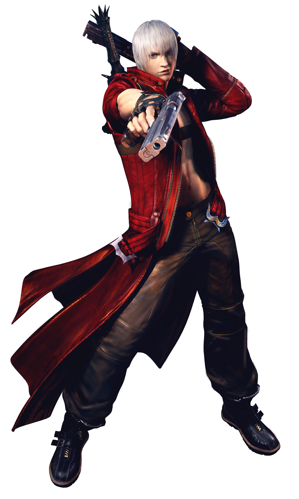
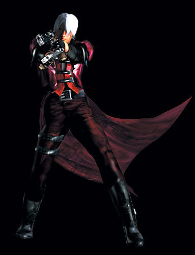
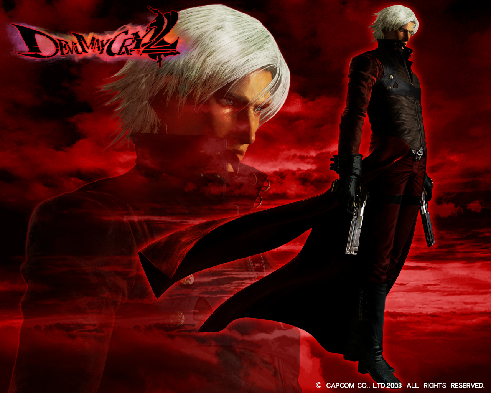
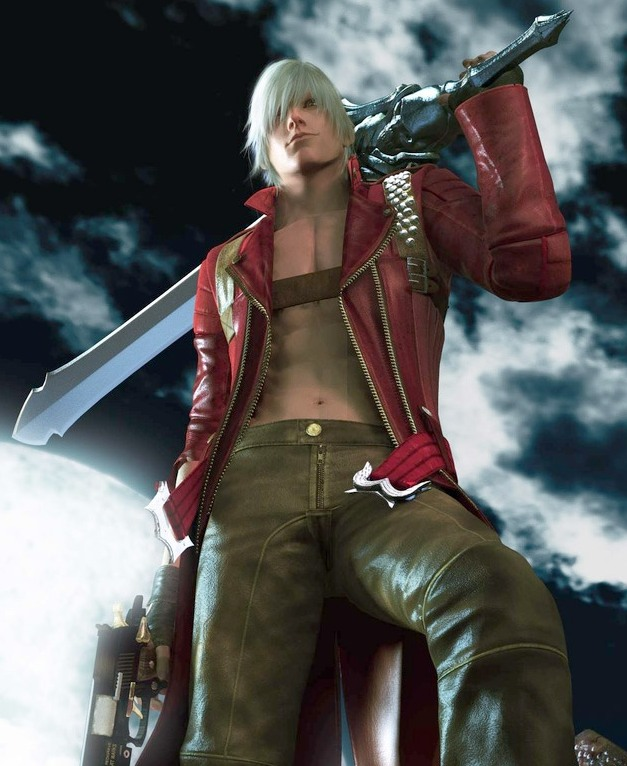
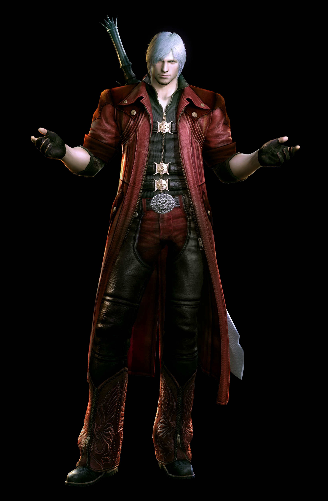
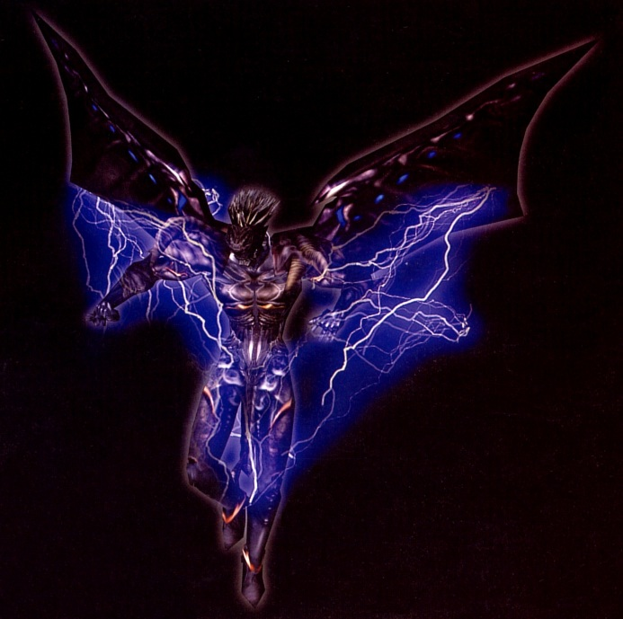
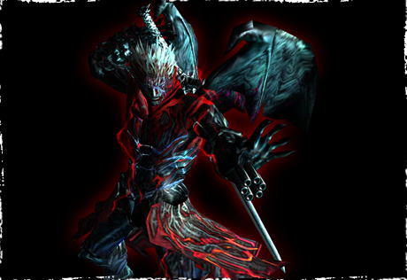
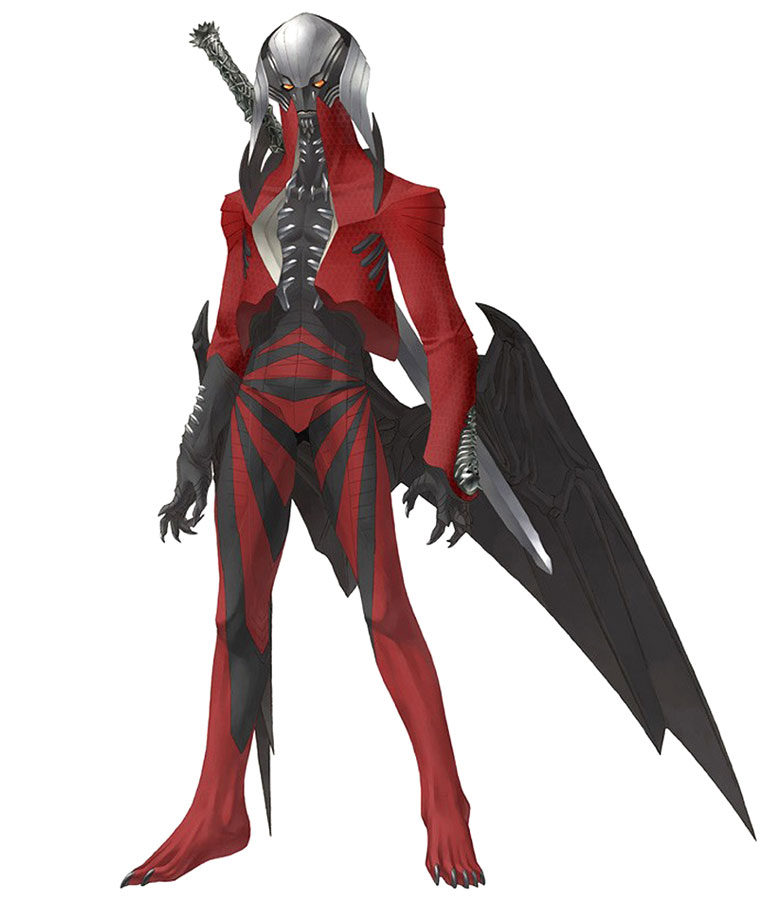
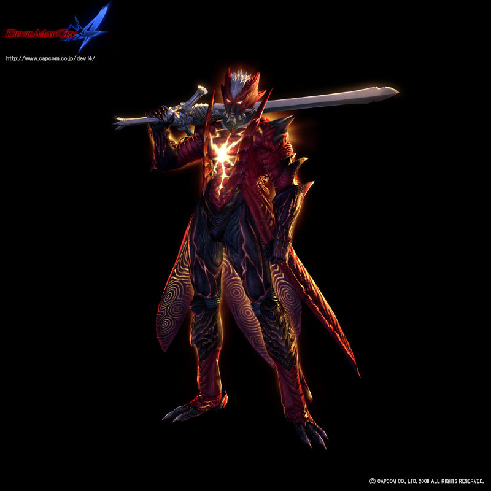

Dante es el protagonista de la serie. Nacido de una humana llamada Eva y del guerrero Legendario Caballero Oscuro Sparda, Dante es un semi-demonio el cual ha dedicado gran parte de su vida a eliminar demonios y demás criaturas infernales que han hecho su aparición en el mundo de los humanos, a través de su propia agencia de cazarecompensas de fenómenos paranormales llamada Devil May Cry, más adelante Devil Never Cry. Dante posee la capacidad de manipular un gran arsenal que se extiende desde espadas demoníacas, hasta el uso de armas de fuego, como lo son sus dos pistolas gemelas Ebony y Ivory (Ébano y Marfil). Dante se muestra como un tipo con bastante actitud rockera y despreocupada a lo largo de la trama.
Podría considerarse a Dante un anti-héroe, pero existen situaciones en las cuales su lado demoníaco prevalece y Dante pasa a ser realmente un ser que inspira terror, sin dejar de ser "el bueno" de la historia. Por lo general, Dante viste una gabardina de cuero rojo o vinilo y su cabello es plateado y es bastante alto. Dante tiene un hermano gemelo llamado Vergil, el cual a pesar de ser su gemelo son totalmente opuestos. Dante y Vergil tendrán más de un enfrentamiento a lo largo de su historia, en la cual finalmente sólo uno quedaría en pie. En el final Dante mostraría afecto a su hermano llorando con leves lágrimas su pérdida. Dante posee dos espadas que son dejadas por su padre a él, Rebellion, una misteriosa espada y a su hermano Vergil , otra espada misteriosa llamada Yamato mágica que mostraría su verdadera forma una vez despierta completamente la sangre demoníaca de Dante y la Force Edge, la espada del legendario Sparda. Filo de fuerza tiene la capacidad de cambiar su forma a una demoníaca combinándola con los amuletos que dejó Eva a sus hijos, esta espada cambia también su nombre por el de su antiguo dueño (Sparda). Dante también hace uso de diversas armas de fuego, pero sus armas por excelencia son Ebony y Ivory, dos pistolas semiautomáticas que tienen la capacidad de disparar municiones ilimitadas. Posteriormente tras lo vivido en la isla Mallet, Dante cambiaría el nombre a su agencia por su nuevo nombre: "Devil Never Cry", como el que se puede ver en la serie de anime de esta saga.
|  | |
|---|---|
| Voces de actores |
Drew Coombs (DMC) Jonathan Mallen(Young Dante, DMC) Matthew Kaminsky (DMC2)Reuben Langdon (DMC3, DMC4, DMC:TAS) (Ja:) Toshiyuki Morikawa. |
| A.K.A | Son of Sparda/Demon Hunter. |
| Genero | Mitad Humano/Mitad Demonio. |
| Papel | Protagonista |
Dante posee fuerza sobrehumana hasta el punto en que puede atravesar los muros de piedra y destruir columnas de un golpe, además de dominar demonios mucho más grandes que él que se oponen. Su velocidad es tan grande que puede moverse más rápido que el ojo humano, ahí que demostró evadir un disparo a tan corta distancia de Nero, su agilidad está a un nivel sobrehumano, lo que le permite realizar proezas como saltar grandes alturas y mantener el equilibrio sobre un cohete en movimiento o los enormes saltos que demostró cuando se enfrentó al salvador en Devil May Cry 4. Dante puede canalizar sus poderes demoníacos en objeto ya sea en armas blancas o negras como las armas cuerpo a cuerpo y armas blanca, en el que generalmente es a la Rebellion y a Ebony & Ivory.
Dante posee la auto regeneración, ya que demostró curarse sus heridas sin esfuerzo y sin necesidad de activar el Devil Trigger, se puede ver cuando es atacado por Soberbias en la escena inicial de la misión 1 de Devil May Cry 3.
Se afirma de que Dante superó a su padre, Sparda a partir del final de Devil May Cry y la información que se da en Devil May Cry 4 en la biblioteca del menú.
Dante es capaz de canalizar su poder en armas y objetos, como con la Rebellion al cargar un Drive o con Ebony & Ivory para disparar disparos cargados o como se ven en el capítulo 2 del anime, Dante potenció la velocidad de una moto para adelantar a un demonio en la autopista.
Devil Trigger: La naturaleza de Dante le permite liberar sus poderes demoníacos totalmente a través de su Devil Trigger, lo que aumenta su velocidad, fuerza y resistencia, además dispone de más habilidades, por lo general el planeo. En Gameplay, te permite recuperar salud cuando activas el Devil Trigger. En Devil May Cry 1 y 3, la apariencia de esta forma varia dependiendo del Arma Demoníaca que tenga equipada, debido a que su Devil Trigger no habían madurado. En Devil May Cry 2 y 4, demuestra su Devil Trigger en un estado más maduro. Y en Devil May Cry 2, Dante demostró la forma Majin, se sabe poco de esta forma de Dante por su escasez de información. También ha utilizado una serie de estilos de lucha demonio.
Estilo de combate: Dante en combate domina una grandísima variedad de estilos, 4 estilos de Dante son propios y mejorado por el mismo Dante, y otros 2 más son estilos externos que obtiene de manera externa.
Los 4 estilos naturales de Dante son: Trickster, Swordmaster, Gunslinger y Royalguard.
Trickster: Es su estilo en el que demuestra su gran capacidad de evasión y maniobrar, aparte de poder teletransportarse por su habilidad Air Trick que se obtiene en el nivel 3 en Devil May Cry 3 y en el nivel 4 en Devil May Cry 4.
Swordmaster: Aquí Dante demuestra su gran dominio en las armas cuerpo a cuerpo y potenciarlas.
Gunslinger: Dante demuestra su gran habilidad en las armas de fuego con más eficacia o elegancia, aparte de demostró usar las armas de fuego de manera muy versátil como su movimiento Firework en el que Dante usa la escopeta a modo de nunchaku para dañar a más enemigos en área.
Royalguard: este es el estilo más poderoso si se llega a dominar, es el estilo defensivo de Dante que demuestra su capacidad de resistir. Aquí se puede bloquear todos los ataques enemigos si se consigue bloquear en el momento del impacto con el Royal Block y poder contraatacar muy poderosamente con el Release o el Royal Release. Aparte de usar Ultímate que es un escudo de energía que se puede usarse en Devil May Cry 3 al nivel 3 de Royalguard y una transformación más de Dante en Devil May Cry 4 con su forma Dreagnouth, en el que Dante absorbe y es inmune a todos los ataques.
Estilos externos que obtiene:
Quicksilver: Dante lo obtiene en Devil May Cry 3. Con este estilo, Dante es capaz de congelar o realentizar el espacio a voluntad, como se vio en la escena final de la misión 12, Dante detiene con este estilo unos escombros que cae encima de él.
Doppelganger: Dante lo obtiene en Devil May Cry 3, cuando derrota a Doppelganger. Este estilo permite crear un clon oscuro con el aspecto de Devil Trigger en el que podrás realizar combos combinados.
Darkslayer: Dante lo obtiene en Devil May Cry 4, tras recuperar la Yamato que fue tomada por la Orden de la Espada antes de que Dante vallase a rescatar a Nero. Con este estilo Dante puede invocar la Yamato y usarla en combate.
El poder de Dante
Se cree que el poder de Dante no sólo proviene de su sangre demoníaca, sino también de su voluntad de proteger a otras personas. Esto puede significar que los demonios pueden alcanzar una forma humana por tener la capacidad de proteger y cuidar a otro, pero esto sólo ha podido hacerlo Dante, Vergil y Nero, debido a su parte humana, así como ser parte demonio. Dante ha demostrado ser capaz de una gran variedad de armas, que ha reunido a lo largo de los juegos.
| Dante en Devil May Cry 1 | Dante en Devil May Cry 2 | Dante en Devil May Cry 3 | Dante en Devil May Cry 4 |
|---|---|---|---|
|  |  |  |  |
| Dante Devil Trigger DMC1 | Dante Devil Trigger DMC2 | Dante Devil Trigger DMC3 | Dante Devil Trigger DMC4 |
|  |  |  |  |